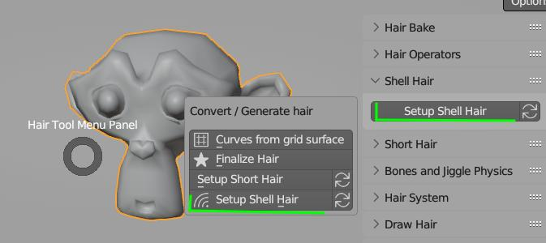
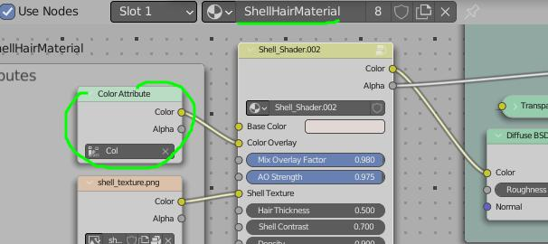
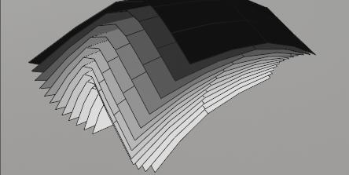
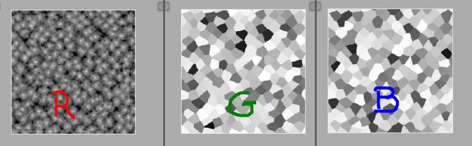
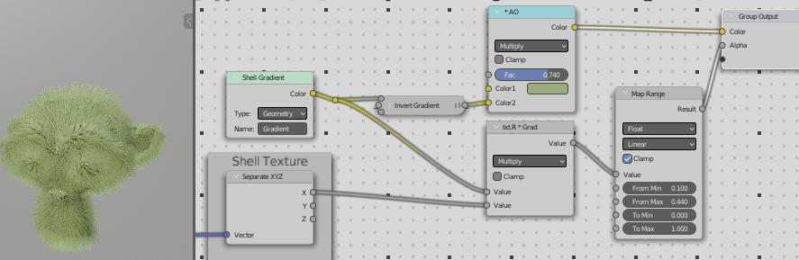

Shell Hair Modeling¶
This modeling technique is creating extra layers of base mesh, layered in onion like fashion, and apply special hair shader to these layers. Useful for creation of short fur, rugs etc. Pros compared to Short Hair Modeling:
- Hair Can be as dense as you want, without adding much geometry, since density is only based on shell texture size
- Shell hair looks better when looked at from top view, compared to Short Haircards,
Cons:
- special Shell hair shader is required to make them work (not that hard to setup though)
- low shells count may look bad, especially if looked at from grazing angle
- uniform UVs are required or shell texture (thus hair) will be stretched
Note Shell Hair modeling requires Hair Tool 2.44 or above.
Similarities to Short Hair:
- easy to use - one click setup
- easy to tweak with blender sculpting tools (or with poly modeling)
How To use¶
- Select your character. Let's assume it is named: Body 
- Use Ctrl+Shift+H menu -> 'Setup Shell Hair' (you can tweak initial shell thickness in operator properties)
- Alternatively you can use: right sidebar (N key) -> Hair Tool Tab -> Shell Hair panel -> 'Setup Shell Hair'
- Two new objects will be added: Body_shell_hair (hair object) and Body_hair_guide (drawn as bounding box)
- Select hair guide object (bounding box) and go into sculpt mode
- that is it, you can now sculpt hair by sculpting guide mesh (polygonal modeling can be used too)
Note To finalize Shell hair use Convert Shell Hair to Mesh from Hair Tool Ctrl+Shift+H menu. This will correctly tranfser UVs from modifier to mesh data
Shell Geometry Parameters¶
These parameters affect how Shell Geometry and Vertex color is Generated. In next section I show the shader parameters.
Layers Count - how many layer will be generated
Bend Factor - Make shell go straight (0) or curve (1) toward guide object. Works only when layer count is bigger than 1
Bend Shape - Bending is happening mostly on roots (0) or at tips (1) of hairstrands. Works only when layer count is bigger than 1, and Bend Factor is non zero
Placement Mask - mask places where shells should be generated
Use Placement Fade - make transition of placement mask softer
Mesh Border Fade - make transition to mesh border softer
Shell Shader Parameters¶
These parameters are affecting ShellHairMaterial material and do not affect generated shells geometry (or shell Vertex colors). You can edit these properties directly by editing ShellHairMaterial material in Blender 'Shader Editor'.
It is up to user to recreate these in Game engine of choice (maybe I will create UE shader if there is demand for it).
Shell Material Section - here you can edit most common properties like: AO strength, strands width, density etc.
Baking Shell Texture¶
If you do not like the default shell hair texture, you can create your own using HTool Shell Baking Scene. To open it:
- Open Right Side Bar (N key) -> Go to Hair Tool Tab -> Hair Bake panel -> click 'Open Shell Texture Scene'.
In there you can adjust shell texture parameters, and bake it using same 'Hair Bake' panel. Setup is a bit similar to Hair Baking Scene, where you can select output file path, file name, resolution etc.
Shell Material Section - you can tweak shell material parameters in here (or open Blenders 'Shader Editor') like: AO effect strength, strands width, density
Unreal Engine Shell Shader¶
Link to Unreal Engine shell shader, made by one of users. You should plug in shell texture that comes with Hair Tool. I did yet have time to test it, but it should work fine.
FAQ¶
How add diffuse color?¶
Open ShellHairMaterial material, and input diffuse texture to 'Overlay Color' input or to 'Base Color' input 
How to export Shell Shader to game engine?¶
Right now there is no shader for Unreal or Unity, but it is not hard to recreate it using shell texture and shell mesh Gradient Vertex Color  Gradient - Shells Vertex color goes from white (float 1) to black (float 0) at top layer
 shell_texture.png - is using 3 channels
- R - holds strands opacity
- R and B channels - holds random values (as B&W color), they can be used to eg. randomize strands width or density.
 Basic Shell Shader .
strands_opacity = [shell_texture.R] * [Shell.Gradient] AO = [Green] * [Invert(Shell.Gradient)] Multiply Strands Opacity by shell_texture.G to get strand width randomization kind of effect.